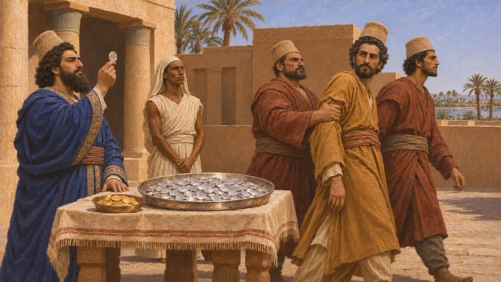
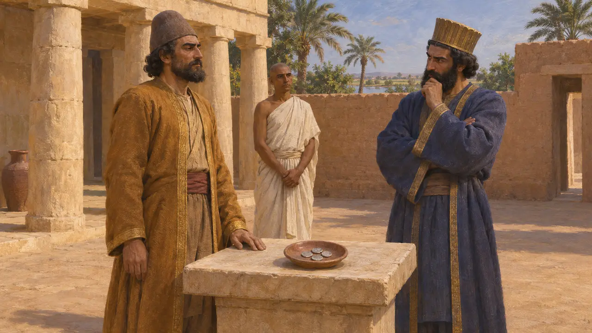

أرياندس
ساتراب فارسي على مصر في عهد داريوس، أُعدم بعد 518 ق.م
كان أرياندس الحاكم الفارسي لمصر، عيّنه قمبيز بحسب هيرودوت، وظل في منصبه في عهد داريوس. يروي هيرودوت خبر الجيش الذي أرسله ضد برقة في ليبيا وخبر العملة الفضية التي دفعت داريوس إلى قتله. وتبيّن القصة كيف كان مركز الساتراب يعتمد على ثقة الملك.
في اللعبة: ليس لأرياندس ميكانيكية خاصة به. تذكره اللعبة فقط في مقالات الأحداث عن حصار برقة وسكّ الدريك، حيث تُروى قصة إعدامه.
الجيش المتوجّه ضد برقة
رواية قديمةيقول هيرودوت إن أرياندس أرسل جيشًا وأسطولًا على برقة للثأر لمقتل أركسيلاوس الثالث ملك قورينا، الذي طلبت أمه فيريتيمي عونه. وقاد القوة البرية أماسيس، وهو مرافي، وقاد الأسطول بادريس، وهو باسارغادي. وسقطت برقة بعد حصار طويل، ويقول هيرودوت إن كثيرًا من أهلها أُسكنوا في بختريا.
Herodotus 4.167
حيلة الحصار
أسطورة لاحقةيروي هيرودوت أن الفرس حفروا أنفاقًا تحت برقة، وأن حدّادًا يحمل درعًا من البرونز اكتشف الحفر فتصدّى له أهل برقة. ثم استولى الفرس على المدينة بهدنة مقسَمة لم يكونوا ينوون الوفاء بها قط. وللحكاية هيئة قصة أخلاقية عن نقض الأيمان، ولا سبيل إلى التحقق منها في أي سجل فارسي.
Herodotus 4.200

سكّ العملة الفضية والموت
رواية قديمةيقول هيرودوت إن أرياندس سكّ فضة من أنقى جودة، منافسةً لسكّ داريوس الذهبي الذي يعدّه هيرودوت أنقى ما وُجد. ثم يقول إن داريوس أمر بإعدام أرياندس بتهمة التمرد. ويجعل هيرودوت سكّ العملة سببَ غضب داريوس.
Herodotus 4.166

ما يشك فيه المؤرخون
متنازع عليهيشكّك المؤرخون المحدثون في أن سكّ العملة وحده كان كفيلًا بالتسبب في موته، ويشتبهون في وجود أسباب أخرى وراء التهمة. فتاريخ إعدامه غير مؤكد، وكذلك أيُّ العملات الباقية، إن وُجدت، كانت له.
P. Briant, From Cyrus to Alexander, 2002
المصادر
- Herodotus 4.166
- Herodotus 4.167
- Herodotus 4.200
- P. Briant, From Cyrus to Alexander, 2002